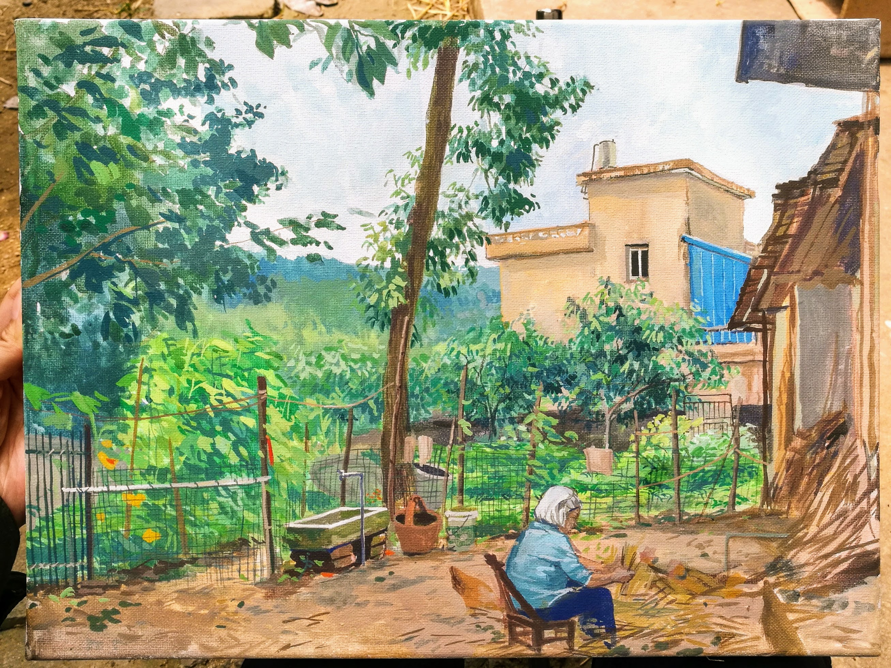
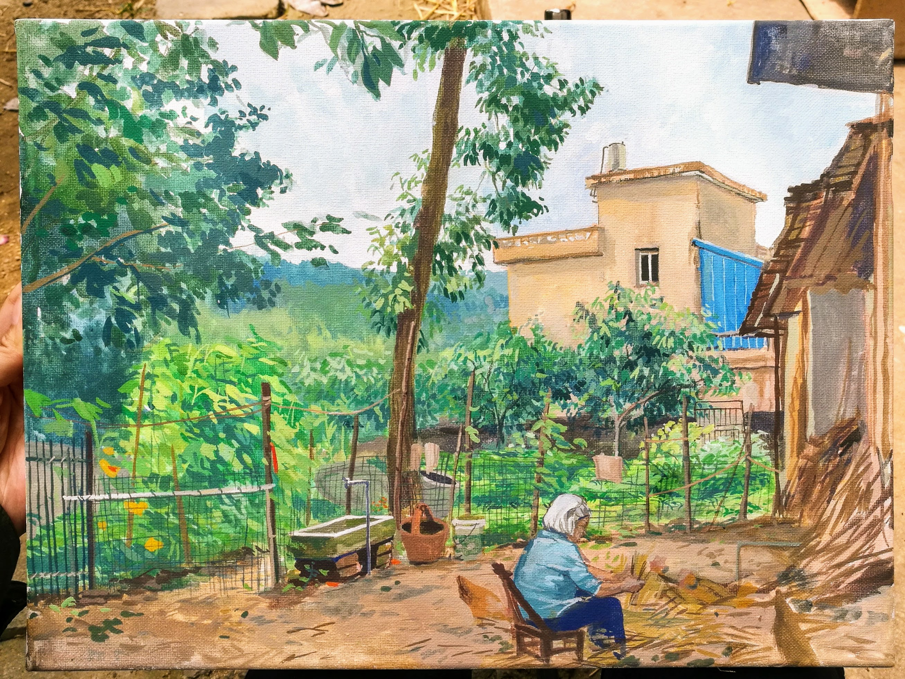

Catalogue/myne.tech
Webapp for cataloguing and keeping track of items such as clothing, books, furniture, and devices. The user can upload item photos and receipts, assign tags and categories, and sort the items accordingly. Developed during Hack the Valley 2 with teammates using HTML, CSS, Bootstrap 4, Node.js, and MongoDB.
VR development
Created a subway platform scene using Unity3D and C# scripting for the CAVE VR setup at the Canadian Institute for the Blind's community hub in Toronto. The VR scenes at CNIB will be used for orientation and mobility (O&M) rehabilitation for those with sight loss, providing a safe environment to relearn how to do every day tasks such as crossing the street or boarding the subway.
Shottle
Product design and prototype created for a design engineering course term project, addressing the prompt of "health and wellness in undergraduate students". Shottle is a two chambered bottle that utilizes an engineered spring loaded lid to encourage users to drink more water alongside alcohol consumption. The lid's default position opens to the water compartment, and requires the user to twist and sip to access the alcohol. The lid returns to the water position once the user lets go.
1A: architecture/engineering
Acrylic on canvas, 2014 and 2018
In December of 2014, I painted '1A' to commemorate having finished my first term of architecture school. In January of 2018, I painted a complementary piece to commemorate completing my first term of engineering school. Both pieces describe the chaos and beauty of the work desk - the story each item on the desk tells of countless hours spent working and studying.
Redux Pavilion
SSEF Competition Entry
Designed a modular construction system for adaptive reuse of steel transmission towers. Created 3D models, renderings, and presentation panels to effectively convey design concept.
Star Crossed
Acrylic on panel, 2014
A painting inspired by the fleeting beauty of the sunset during a drive home with friends in Cambridge, ON.
[I looked through stained glass
the sky,
the sky
the Sky.
A feeling like planes,
something breathless, happy
aflight.]
Sun, Moon, Stars
Acrylic triptych on canvas, 2014
The windows of the University of Waterloo, School of Architecture building are generous and wide - these are paintings inspired by the sunset, basking in the late afternoon light, looking up to the moon, and walking home under starlight after a long day's work at school.
Other Paintings
Oil, acrylic, watercolour, gouache
I love to paint colour and light.
Music
I've been playing the piano since I was 7, and the erhu since I was 16.
I represented Scarborough for the ORMTA GTA piano finals for 2010 and 2011. I also won first place in the Kiwanis Music Festical for the Non-western strings (bowed) category, as well as first place for the 21st Mandarin Lion Arts Festival for Erhu performance in 2014.
I have been performing with the Ho Deng Ensemble since 2012, performing at venues such as the Harbourfront Centre, Fairmount Royal York, and at the Taipei Hospital for Sick Children.

 
